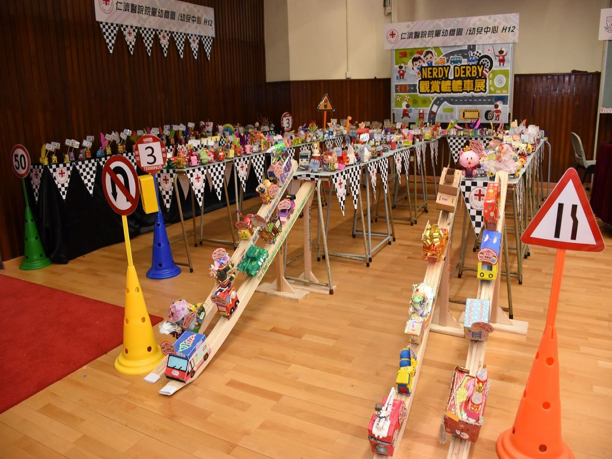
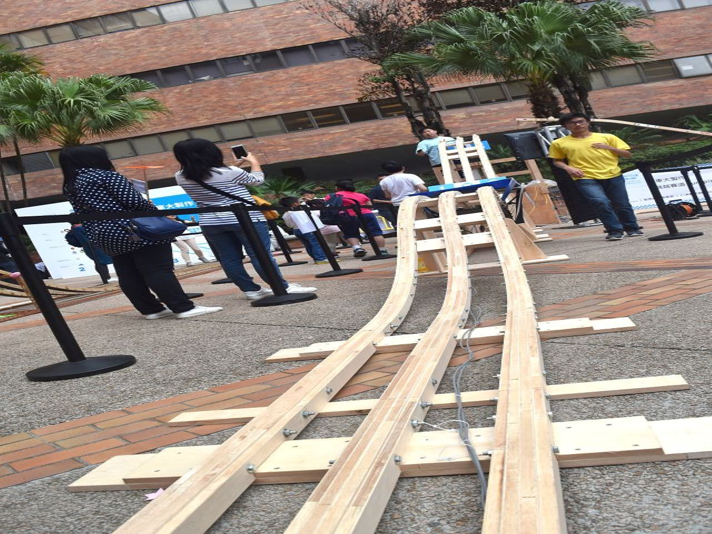

精彩瞬間
為你最喜歡的STEM項目進行投票吧！



夢想 創造 實現
隨著二十一世紀的科技的快速進步和發展，科技在各個方面都大大改變了人們的生活方式。近年來，STEM教育亦受到越來越多公眾的重視。人們發現普通的傳統教育已經不能滿足現在知識性的社會，老師、家長、學生都已認識到STEM教育的重要性。
本校一直致力於為學生們打造優良的學習環境，創造不同的學習機會使學生們得到全方面的發展，而不是僅僅注重於學科成績。因此本校近年也大力推行STEM教育，研發了一系列STEM項目，並取得了不錯的成效。
通過我們的STEM項目，學生們被鼓勵敢想、敢做，不再是一味地停留在書本和課堂上，我們要求學生們將知識實踐。我們發現，因為STEM教育，學生們的自主思考，獨立動手以及解難能力都得到了很好的鍛煉，更有一些覺得傳統課堂無聊的學生，對這種教育模式表現出濃厚的興趣，變得主動積極。而且，我們還經常與其他學校合辦有關STEM活動，讓學生們可以有一個平台與其他學校的學生進行交流。
鼓勵學生敢想敢做
我們的追求
為你最喜歡的STEM項目進行投票吧！
Come and join us !
隨時歡迎寫下你的想法給我們！